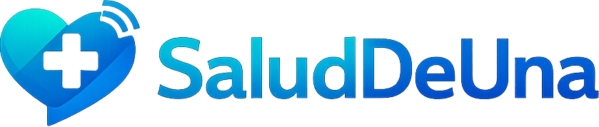
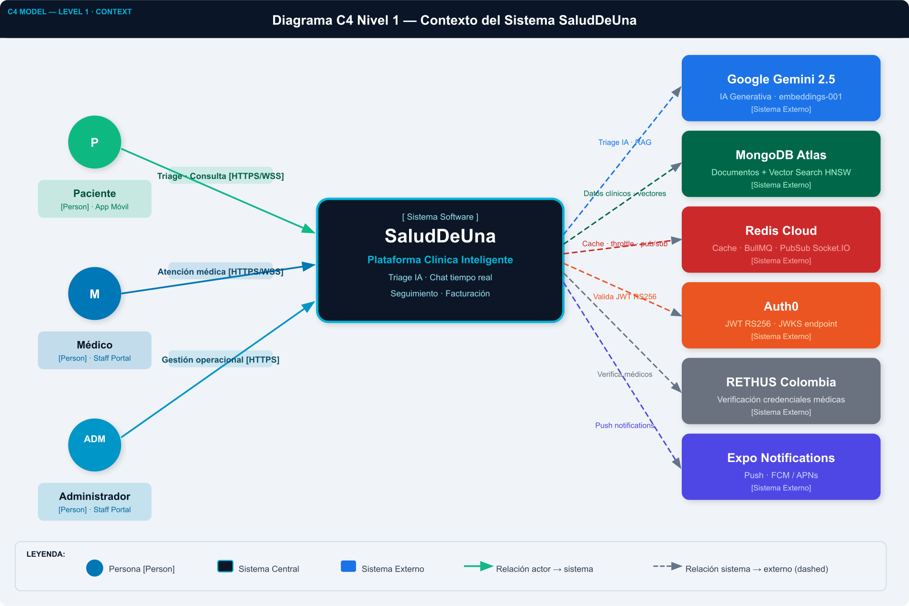
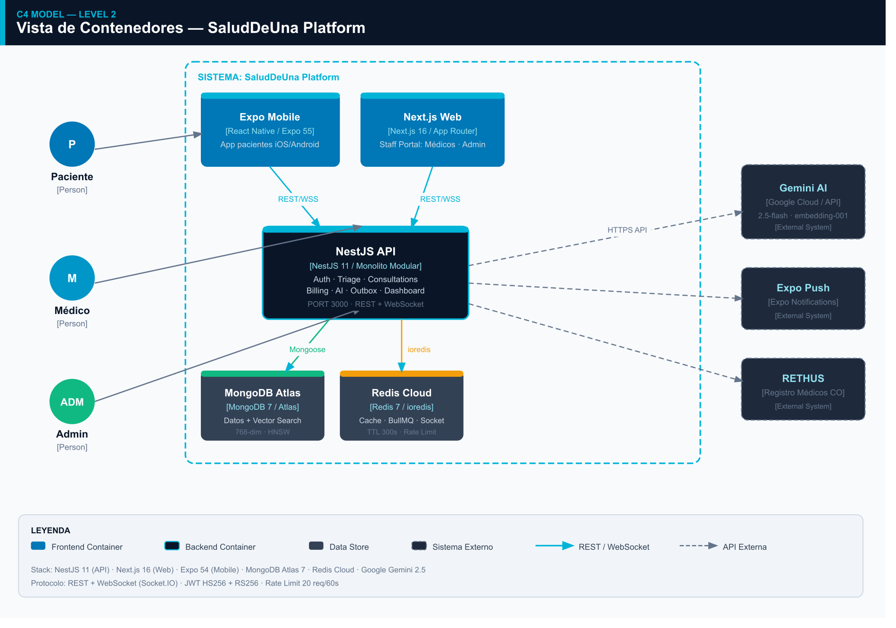
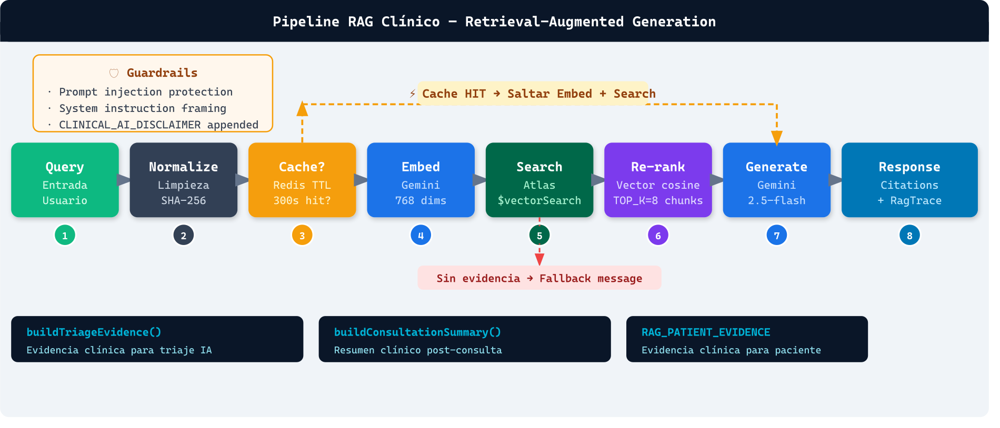
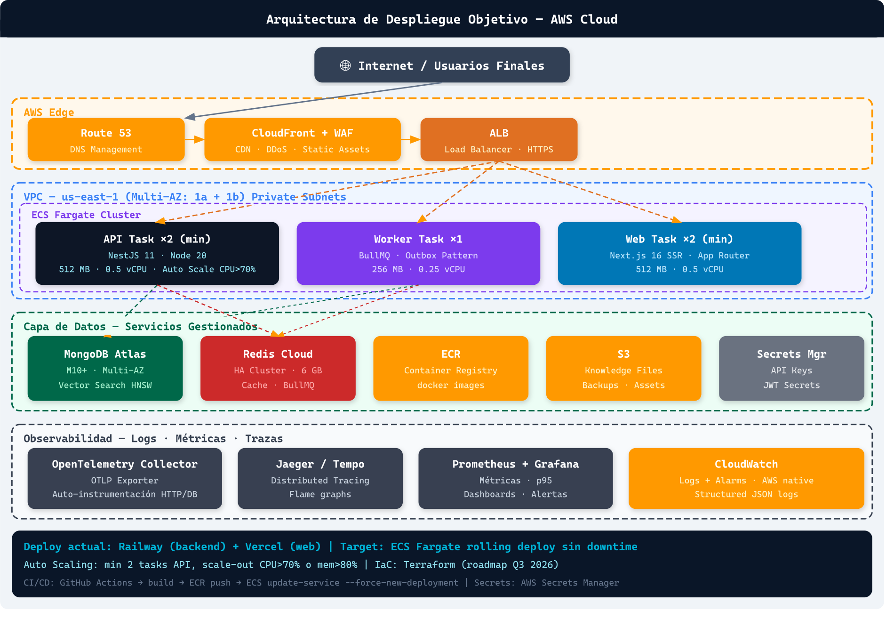
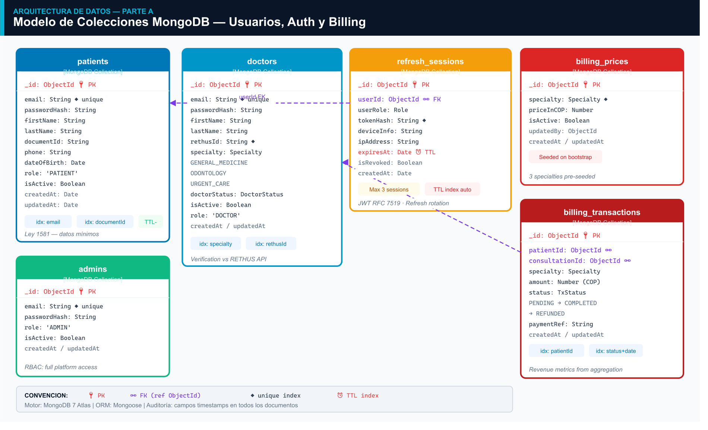
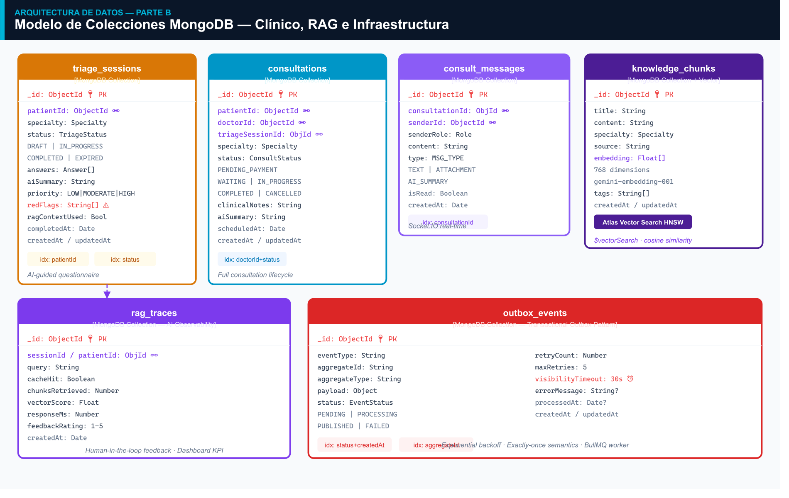
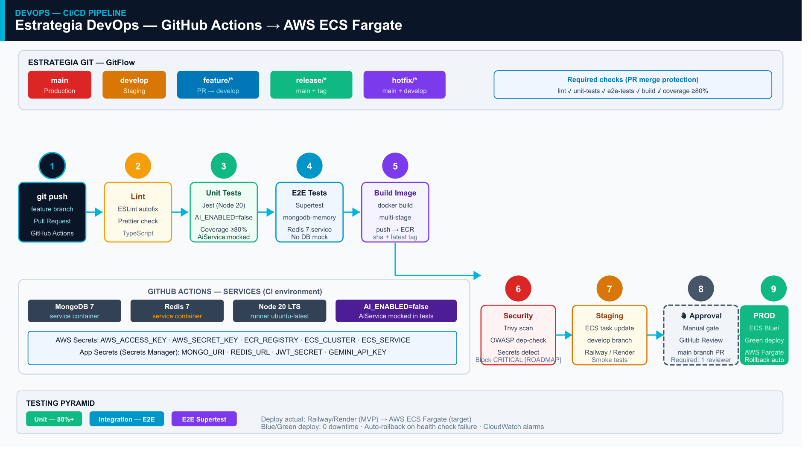
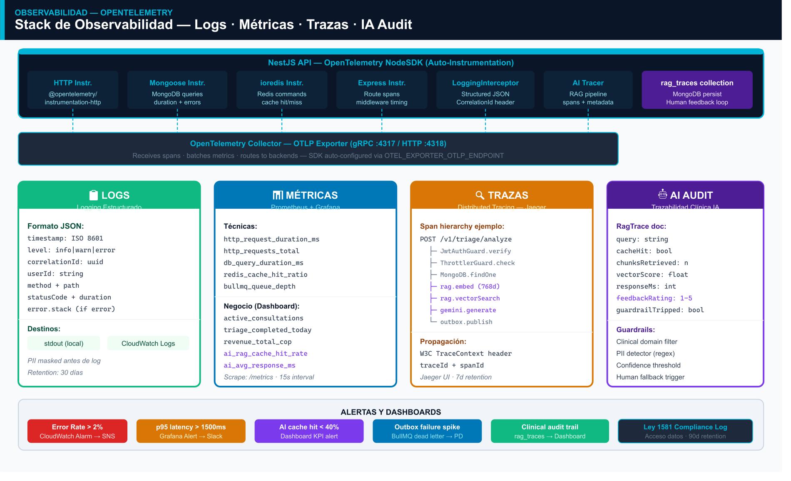
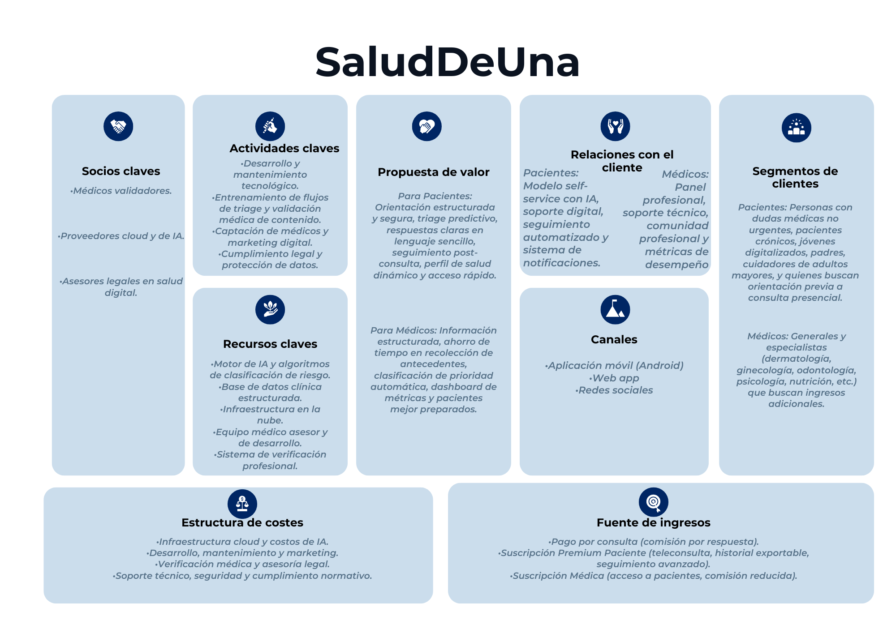

SaludDeUna
Plataforma de Comunicación Clínica Asistida por IA
El recorrido demuestra problema, solución y solidez técnica.
7 bloques temáticos · Demo en vivo como evidencia final · ~20 minutos
"La información clínica llega al médico
mal organizada, tarde, o incompleta."
Pacientes de atención primaria en Colombia — Contexto de consulta ambulatoria
El paciente no sabe cómo comunicar sus síntomas de forma clínicamente útil.
El problema no es la información — es la falta de estructura para transmitirla.
Dolor de comunicación
Consecuencias reales
El médico reconstruye el contexto clínico desde cero en cada consulta.
El tiempo clínico efectivo se reduce cuando el médico recolecta información básica.
Anamnesis repetida
El médico hace las mismas preguntas básicas en cada consulta. Información que el paciente ya tiene pero no estructura.
Sin continuidad
Entre una consulta y la siguiente no hay contexto estructurado. El historial existe pero fragmentado y difícil de acceder.
Alta carga operativa
El triage manual consume tiempo de atención clínica. El médico es el cuello de botella del sistema completo.
SaludDeUna es la capa inteligente entre paciente y médico.
IA con guardrails clínicos que estructura información, clasifica prioridad y da continuidad.
01 · Triage Asistido IA
Cuestionario estructurado por especialidad. Detección de red flags. Clasificación de prioridad LOW / MODERATE / HIGH antes del médico.
02 · Resumen Clínico
Gemini 2.5-flash genera nota médica estructurada basada en el cuestionario y el chat. El médico llega informado, no en blanco.
03 · Seguimiento
Followups automáticos a 72 horas y 7 días post-consulta. Si el paciente empeora, el sistema escala a consulta de alta prioridad.
Claridad de alcance: SaludDeUna NO reemplaza al médico.
Límites técnicos y éticos explícitos. No es una promesa — es código ejecutable.
❌ Fuera de alcance
✅ Lo que SÍ hace la IA
Todo lo que se prometió está implementado y con tests.
3 especialidades · 3 roles · 2 frontends · 17 módulos backend · 406 tests
Auth & Roles
Registro, login JWT+Auth0, RBAC, máx 3 sesiones, refresh tokens
Triage IA
Cuestionario por especialidad, red flags, prioridad, guardrail, fallback reglas
Cola Médica
PENDING→IN_PROGRESS→COMPLETED, ordenada por prioridad, asignación
Chat Real-time
Socket.IO, persistido en MongoDB, Redis adapter multi-instancia
Resumen IA
Gemini genera nota clínica, guardrail valida, historial acumulativo
Seguimiento
Followups 72h + 7d, escalación automática si empeora, BullMQ
Admin Panel
Verificación REThUS, gestión usuarios, billing, dashboard KPIs
Billing
Precios por especialidad, transacciones COP, revenue metrics
Tres roles, interfaces separadas, backend compartido.
Patient-only en mobile. Doctor y Admin en web. Permisos RBAC en cada endpoint.
Flujo completo de principio a fin — trazable y auditable.
Cada consulta tiene CorrelationId. Cada evento pasa por el Outbox transaccional.
JWT + Auth0
Gemini + Guardrail
Billing COP
Por prioridad
Socket.IO
Gemini + Guardrail
72h + 7d BullMQ
Mensajes persistidos en MongoDB con correlationId
Outbox transaccional crea eventos de dominio
Worker BullMQ procesa followups asincrónicamente
Escalación automática si severidad aumenta ≥2 puntos
Diagrama de Contexto: actores humanos y sistemas externos.
3 actores · 1 sistema central · 6 servicios externos · HTTPS / WebSocket

Contenedores: frontends, API, Worker y capa de datos.
API para request-response · Worker para jobs asincrónicos · MongoDB Vector Search 768d

4 dominios · 17 módulos · 3 capas transversales.
Cada módulo tiene límites claros. Acoplamiento por DI, nunca por imports directos.
Pipeline: cuestionario → Gemini → guardrail → resultado auditable.
El fallback a ReglaEngine actúa sin interrupción si Gemini falla.
Si el guardrail detecta diagnóstico/prescripción: aiSummary = null · guardrailApplied = true · log WARN con correlationId
Si Gemini falla (fallback): RedFlagsEngine procesa reglas locales · sin error visible para el usuario · analysisType = RULE_BASED
Seis criterios de calidad con evidencia técnica medible.
No son aspiraciones — son mecanismos implementados con tests que los validan.
Defensa en profundidad antes del controlador de negocio.
Cada request pasa por 5 capas de validación antes de ejecutar lógica de dominio.
🔑 Dual Auth: JWT + Auth0
HS256 para flujo legacy · RS256 vía JWKS para OAuth2/Auth0 · JwtAuthGuard global con bypass @Public()
👥 RBAC Explícito
3 roles: PATIENT · DOCTOR · ADMIN · Guards globales via APP_GUARD · DoctorVerifiedGuard en rutas clínicas
🚦 Rate Limiting Distribuido
20 requests / 60 segundos / IP · Redis Store distribuido · Funciona en multi-instancia sin acoplar estado
🔒 Gestión de Sesiones
bcrypt cost 12 · Máximo 3 sesiones activas · LIFO revocation si se supera límite · Refresh token rotation
406 tests, 93% cobertura, E2E con MongoDB real en memoria.
Si la cobertura baja del 80%, el CI falla automáticamente. No hay degradación silenciosa.
Unit Tests (Jest + NestJS Testing)
Mocks de módulos NestJS · AiService siempre mockeado · Validan lógica de dominio aislada · Rápidos, ejecutan en CI en <30s
E2E Tests (mongodb-memory-server)
MongoDB real en memoria para cada suite · No se mockea la capa de BD · Detectan bugs de queries complejas y relaciones entre esquemas · 12 suites E2E
Tres niveles de observabilidad: logs, métricas y trazas distribuidas.
Cada request queda trazado. Cada error tiene correlationId. Cada KPI está disponible via API.
📋 Logs Estructurados
JSON con: correlationId · userId · method · path · statusCode · durationMs
{"level":"INFO","correlationId":"abc-123","durationMs":142}
📊 Métricas Técnicas
p95 latencia en tiempo real · Error rate · Endpoint: /v1/dashboard/technical · Alerta si p95 > 1500ms por 10 min
🔭 OpenTelemetry
NodeSDK con auto-instrumentación · OTLP HTTP :4318 · Listo para Jaeger/Tempo en producción
Tiempo a 1ª respuesta médica
Tasa de uso resumen clínico IA
Tasa confirmación red flags
Retención followup 7 días
La IA tiene tres funciones concretas, todas con guardrails.
Gemini 2.5-flash + embedding-001 · RAG con Vector Search HNSW 768 dimensiones
🤖 Triage Inteligente
Clasifica prioridad LOW/MODERATE/HIGH
Detecta red flags por especialidad · Prompt versionado · Audit log de cada análisis · Fallback a ReglaEngine
📝 Resumen Clínico
Nota médica estructurada post-chat
Doctor solicita al cerrar consulta · Guardrail valida antes de mostrar · Campo aiSummary en Consultation
🔍 RAG Pipeline
Retrieval-Augmented Generation
8 pasos · Knowledge base clínica · Vector Search Atlas HNSW · Cache Redis 300s · RagTrace auditable

El guardrail no es una promesa — es código ejecutable y auditable.
GuardrailService evalúa cada salida de Gemini antes de persistir. Sin excepciones.
La respuesta de IA no se persiste
Flag auditable en el documento
Evento registrado y trazable
Claude Code fue el copiloto técnico del equipo durante todo el proyecto.
Evidencia concreta del ítem 6 de los lineamientos: IA en generación de código, tests, arquitectura y documentación.
⚙️ Generación de Código
Módulos NestJS completos · Controllers, Services, DTOs · Schemas Mongoose · Hooks React y componentes Next.js
🧪 Testing
406 tests generados/revisados con IA · E2E suites con mongodb-memory-server · Mocks de módulos NestJS
🏛️ Arquitectura
Revisiones arquitectónicas por sprint · Auditoría C4 · Diagrams as code · Decisiones de patrones documentadas
📚 Documentación
16 documentos wiki · READMEs de 3 servicios · SAD (Software Architecture Document) · Diagramas Mermaid
🎨 UX / UI
Diseño de flujos de usuario · Mockups mobile · Componentes shadcn/ui · Paleta de colores y sistema de diseño
🔄 Refactorización
Separación de módulos · Extracción de servicios · Aplicación de patrones clean architecture · Code review asistido
Demo en vivo: flujo completo en 8 pasos · ~7 minutos.
Si Gemini no responde, el sistema usa el motor de reglas — sin error visible para el usuario.
Instalar y abrir
JWT + Auth0
Red flags visibles
Pago simulado COP
Cola prioridad ALTA
Socket.IO bidireccional
Gemini + Guardrail
KPIs reales BD
Si Gemini falla: sistema usa RedFlagsEngine automáticamente
Si hay problema de red: screenshots de respaldo disponibles
Dashboard: datos reales de MongoDB, no hardcodeados
Demo activo — sistema funcionando en tiempo real.
Backend desplegado · MongoDB Atlas con datos reales · Socket.IO activo
Lo que construimos en números.
5 meses · 4 personas · 3 servicios productivos · 1 plataforma clínica funcionando.
Un sistema que funciona, con tests que lo respaldan y arquitectura que se puede defender.
Lo que aprendimos:
El código es abierto. Los tests están pasando. La demo acaba de funcionar.
Contexto C4: actores humanos y sistemas externos.
Contenedores C4: frontends, API, worker y datos.
Despliegue objetivo AWS: ECS Fargate + ALB.
Deploy actual: Railway + Vercel · Deploy objetivo: ECS Fargate SPOT (~$25-31/mes)

Modelo de datos: dominio usuarios y dominio clínico.
MongoDB + Mongoose · Atlas Vector Search HNSW 768d para RAG


CI/CD y observabilidad reducen riesgo operacional.


Preguntas técnicas probables y respuestas preparadas.
¿Cómo garantizan que la IA no diagnostica?
El guardrail es código, no promesa. Si Gemini genera lenguaje de diagnóstico, aiSummary = null. Podemos mostrar GuardrailService.
¿Por qué MongoDB y no PostgreSQL?
Vector Search nativo para RAG, esquema flexible para datos clínicos que evolucionan, embeddings 768d nativos en Atlas.
¿Por qué NestJS?
Madurez en TypeScript, DI explícita, módulos aislados, ecosistema para RAG y WebSocket listo. No requería la complejidad de Spring Boot.
¿Cómo escala el chat?
Redis adapter para Socket.IO. En multi-instancia, el pub/sub de Redis distribuye mensajes entre todas las instancias sin estado compartido.
¿Qué pasa si Gemini falla?
RedFlagsEngine basado en reglas locales toma el control. analysisType = RULE_BASED. Sin error visible para el usuario.
¿Cuál es el costo de infraestructura?
Railway + Vercel + MongoDB Atlas M0 + Redis Cloud free: ~$0/mes en dev. ECS Fargate SPOT objetivo: ~$25-31/mes.
Business Model Canvas y viabilidad de mercado.
